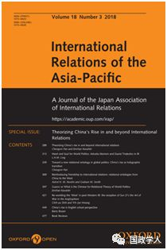
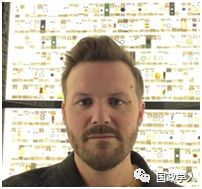

收录于合集

简 介
【作者】 Astrid H. M. Nordin兰卡斯特大学政治、哲学与宗教系Graham M. Smith利兹大学政治与国际研究学院
** 【编译】** 黄运涛
** ** ** 【校对】****** 朱文菡、晋玉
** ** ** ** ** 【审核】********** 丁伟航
** 【 来源 】**
International Relations of theAsia-Pacific ,Volume 18, Issue 3, September 2018, Pages 369–396, https://doi.org/10.1093/irap/lcy011 ,Published:22 June 2018
** 【 ** ** 期刊** 】****
《亚太国际关系》（InternationalRelations of the Asia- Pacific）创刊于2001年。该刊物主要关注：亚太地区国家间关系、区域间关系、亚太地区国家的国际关系理论和问题等。比如：存在争论的“亚洲价值”、苏哈托后的印尼对外政策、亚太地区的区域主义兴起等议题。

将友谊重新引入国际关系 :从中国到西方的关系本体论
Reintroducing friendship to international relations: relational ontologies from China to the West

Astrid H. M. Nordin；Graham M. Smith
内容提要
中国的官员和学者们努力把中国的崛起定位为 和平友好的 ，这与西方人所持的 国家崛起必有一战 的传统观念大不一致。本文试图对这种中国特有的思维和态度进行分析。目前，很多西方国家都对中国的崛起感到恐惧，而中国的学者和官员乃至国家主席习近平近年来都试图说服西方改变这一偏见，他们认为，中国自古以来的价值观都是主张对外友好，从不存在称霸的传统。
本文分为三部分，第一部分通过中国与欧洲的传统与历史来介绍友谊在政治中的作用；第二部分通过事件回顾总结道，国际关系学科由一种将“事物”置于“关系”的思维方式构造；第三部分谈及关系本体的问题，中国国际关系学者秦亚青提出中国关系本体论；最后得出结论： 真正的分歧在于对友谊的理解。第一个本体论倾向于再现本质主义的 “ 自我 - 他者 ” 二分法，将友谊作为一种角色或属性，而第二种则倾向于转变。关系思维有助于摆脱这门学科中的西方中心论的影响，培养多元的思维。
文章导读
**1
**
友谊的转变：从“朋友-朋友“到”朋友-敌人”
国际关系与政治领域大多与“国家”、“权力”、“公民”、“主权”等词连在一起，极少有人提及“友谊”，所以不少人对两国间会否存在友谊表示质疑。实际上，在这里， 友谊的概念比平时的用法要复杂得多， 下面就来简单介绍一下古今中外对它的理解，这也为国际关系学界对这一概念的探讨以及重新理论化奠定了基础。
对中国和欧洲的故人来说，友谊都是核心价值观，除伦理上的意义外，它也有政治上的含义；而现在的国关学界却认为两者不可混为一谈。 古代中国和希腊都强调，交朋友的重要原则是价值观，这比利益重要，如柏拉图曾说过，友谊是实现善德的必要条件，与之类似，中国的孔子与荀子也强调仁义和爱。
民族国家出现后，新的主导思想与上述观念大相径庭，欧洲思想家卡尔•施密特（Carl Schmitt） 把朋友和敌人的区别看作是政治的决定性特征 ，他认为，当一个民族意识到自己作为一个国家的身份时，“它就有能力区分朋友和敌人”。
**2
**
友谊的边缘化：国际关系和“事物本体论”
从上面的角度来看的话，现在的国际秩序确实是把“友谊”边缘化了，那从政治角度构建的人际关系又是如何在国际关系中体现出来的呢？国际关系学上有三种流派，分别是现实主义、自由主义和建构主义。
其中最重要的是现实主义，它强调主权、权力与安全，认为世界处于无政府状态，每个国家都必须增强自身实力来确保生存。此理论获得广泛认可，要提出任何一种新理论都必须对它提出批判；然而，实际上其他理论也接受了它的话语系统，比如说自由主义，它也认可现实主义对国际社会游戏规则的看法；当然， 更强调规范和非国家行为体的作用。 而建构主义则更具特色，其实那并不是一种国际关系理论，而是一种研究方法。温特认为，国家间关系有三种： 敌人、竞争对手和朋友 。他认为，在无政府状态下，国家的行为由国家对自己的定位和对其他国家的态度决定。
**3
回归友谊：“关系本体论”、关系和道家辩证法
**
**
前文概述了在很多现代政治思想中友谊的分歧，下面来谈谈中国人在这方面的贡献，道教中的辩证思想特别值得关注。
3.1 秦亚青：关系与辩证法
秦亚青创建了国际关系理论的“中国学派”，他认为，西方国际关系理论的基础是“个体性”，而中国则侧重于“关系”，在此基础上，他提出了“世界政治关系理论”。该理论认为， 依赖关系意味着中国人对人与人之间的关系有一种独特的、由地理文化决定的思维方式，这与西方的思维方式不同。 而在欧洲社会科学中起重要作用的是“理性”，而在中国思想中对应的词是“关系”。秦亚青通过解释道教思想中常见的阴阳符号来说明这些关系。这个符号由一个黑色和一个白色的一半组成，组成一个“和谐整体”的圆。没有两半，圆就不存在;没有圆，两半就不能形成一个形状。他把中国辩证法与黑格尔为代表的西方思维进行对比，在他看来，“西方的思维方式”侧重于独立的实体，并倾向于假定离散性。 根据二分法的理解， A 永远不可能是非 A ，因为两者本质上有不同的性质。而在中国辩证法中， A 可以是非 A ，也可以包括 A 可以转化为非 A （ A 可以主动转换为非 A, 也可以因外力变为非 A ） ; 具有包容性。 与黑格尔辩证法形成鲜明对比的是，中国辩证法中的论题与反论题相辅相成，构成一个和谐的整体。这样一来，阴阳关系就否定了“正题对反题”或“我们对他们”的二元结构概念。
3.2 贝伦斯托特（Berenskötter）提出的友谊与焦虑同秦亚青的一样，贝伦斯托特也看到了本体论的局限性。 本体论假定 “ 个人（国家）是一个寻求自主的实体 ” ，这与主流西方国关理论是一致的。他借鉴了女权主义、后结构主义和其他欧洲思想，提出国家并不主要关心威胁到它们生存的其他国家（现实主义者就担心这个），而是担心这样的不确定性（国家关心的并不是威胁到他们生存的其他国家本身，而是担心这种威胁所带来的不确定性）。他认为， 国家会通过寻找伙伴的方式来获得安全感，他借用了亚里斯多德和孔子的思想，认为真正朋友就是有共同崇高理想的人，实现这个理想的过程会引导人们走向和谐 。
与那些将这种本体论焦虑理解为西方思想特征的人相反，石之瑜(Shih Chih- yu)认为，区分中国国际关系理念关系转变的一个特点是，区分国际关系学科中中国关系转变的关键点在于 它关注的是焦虑，而不是激情。 他在“中国”和“西方”中都看到了一种 “ 根植于人际关系中的普遍焦虑感 ” ， 当人际关系中的积极情绪能够提供个性化的、相互保证的总体认可时，这种焦虑感就能得到平息，这种焦虑感还集中在对个人情感的关注上。
3.3 Ling: “ 自我和他者 ” 的亲密性 以及 多重世界 （ Multiple Worlds ） 的可能性
秦亚青和贝伦斯托特在思考国际关系的本质时都 很重视关系和 “ 友谊 ” 。特别是他们都将关系与自我与他者的共同建构和依赖问题联系起来。贝伦斯托特试图说明，当一个国家寻求他者对自己的认可时，友谊如何能够减轻它的焦虑；而秦亚青通过道家阴阳辩证法发展了他的关系观，并将其重新定义为“中国”辩证法。对他来说，问题不在于调和自我和他者，而在于认识到自我和他者是相互构成的。因此，尽管两人在自我与他者的共同构成上有共识，但他们对自我与他者对立的起源和持久性却有着不同的看法。对贝伦斯托特来说，焦虑似乎是自我与他者关系的一个永恒的本体论事实。它可以被控制，但不能被根除。相反，秦亚青没有把这种张力看作是本体论的基础。
Ling提出“世界主义”，她对阴阳理论的理解与秦亚青类似。她批评“威斯特伐利亚世界”（即以霸权为基础的世界格局）及其本体论是一种暴力——不承认其本身也依赖于其所排斥的他者，以及他者的知识和认知方式——而这正是Ling所谓的“多重世界（Multiple Worlds）”。她利用秦亚青提出的道家辩证法，为“威斯特伐利亚世界”那种暴力而焦虑的世界观提供了另一种选择。她写道， 在这样一种道家辩证法中，尽管两极之间和两极内部存在着矛盾（阳），但优势互补（阴）仍然占上风。 这种世界观强调对自我的复杂性的认知，即他者的痕迹和元素也包含于自我之中。
**4
** ** ** 结 论:重新发现友谊 ****
本文从中国将崛起成为爱好和平大国——信奉中国的关系本体论，而不是西方的事物本体论）。在国际关系理论中， 友谊是关系本体论的重要组成部分。 中国思想是对国际关系学者提供了有益的参考，对发展关系本体论的学科建设具有独特的贡献，但目前国际关系学界并没有给予足够的重视。
中国关系本体论认为，要对国际政治有更全面的认识，理解自我与他者的共同构成是必要的，也是有益的。此外， 中国思想表明，自我与他者之间的关系不一定导致冲突和征服，相反，它们可以成为相互依存的增长和变化的动力基础。
因此，本文所述关系本体论为理解中国在国际关系中的友好倾向提供了一个不同于中国官方、学术和外交话语中的可能起点。我们看到，中国的友好与“和平崛起”，既不依赖于某些想象中的独立的“中国”的自主行动，也不依赖于中国人民、民族或国家的某些本质特征。相反, 友谊可以理解为是创造和维持了我们与他人的持续发展 , 以及多重世界的本体论上的平等。
**
**
_ ** _ 本文由国政学人微信平台独家编译首发**
更多阅读
【重磅速递】约瑟夫·奈：美国霸权的兴衰：从威尔逊到特朗普 | 国政学人
【重磅推荐】巴里·布赞：英国学派视角下的中国崛起 | 国政学人
【重磅速递】米尔斯海默：注定失败：自由主义国际秩序的兴衰 | 国政学人
【国际组织】IO杂志：联合国维和行动的武力运用问题研究 | 国政学人
【国际秩序】为什么自由主义国际秩序理念将美国外交政策引入歧途？| 国政学人
【关系理论】“关系”：世界政治关系理论的中国话语 | 国政学人
【百年国关】历史在国际社会中的应用：从巴黎和会到现在 | 国政学人
【英国学派】张勇进：中国与全球国际社会中的自由主义等级制：实力与对规范变迁的协商 | 国政学人
【地区秩序】论经济实力的可转化性：中国经济崛起与东亚安全秩序 | 国政学人
【中俄关系】不得已的伙伴：系统-单元动态与中俄关系 | 国政学人
【IPE研究】美国对外贸易政策的“1934年体制”是如何形成的？ | 国政学人
【现实主义】斯蒂芬·沃尔特：傲慢的终结与美国克制的新时代 | 国政学人
【理论批判】系统、层次与结构理论：沃尔兹的理论并非系统理论 | 国政学人
【外交政策】单极体系下的不和平状态与美国外交政策 | 国政学人
【欧洲研究】资本主义多样性与合规：加入欧盟后中东欧的经济改革 | 国政学人